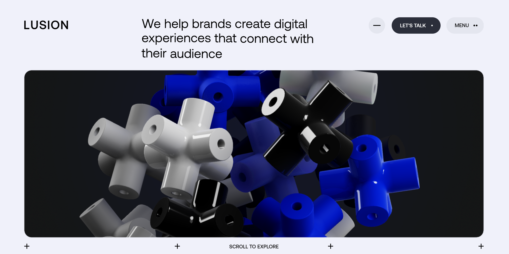
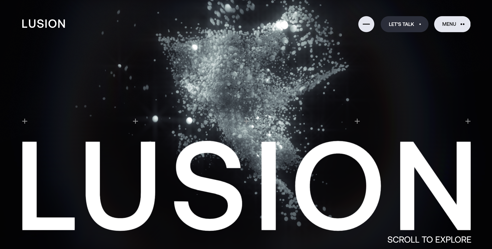

Inspiración de diseño
LUSION es un sitio web de diseño minimalista que se centra en la simplicidad y la funcionalidad.

Este es un texto de relleno que se utiliza para simular el contenido de una páhina web.
Este es un texto de relleno que se utiliza para simular el contenido de una páhina web.


Este es un texto de relleno que se utiliza para simular el contenido de una página web.